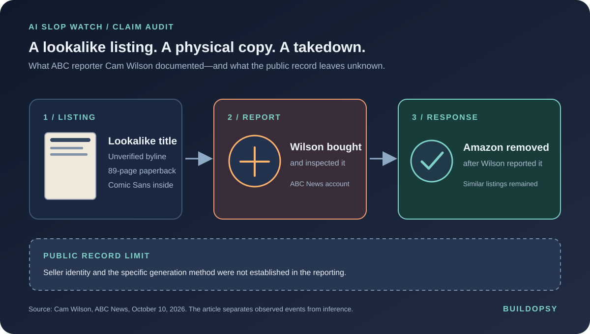

1. A Suspicious Book With a Real Author's Name in the Title
Wilson's ABC News account starts with a listing called Conspiracy Nation Exercises: Redefine Living Through Cam Wilson Teachings. The title echoed a book he had co-written the previous year. The listed author, “Leni McAllister,” did not appear to have a verifiable identity. The short product description had familiar AI-writing tics, but style alone is not a forensic test.
Wilson bought a copy. The physical paperback was 89 pages, double-spaced, oversized and set in Comic Sans. He says it contained statements he had not made. Another author told him she had heard from readers who bought a lookalike edition of her own book. The point is not that every poor-quality book is automatically AI slop; it is that a shopper could mistake a derivative listing for a creator's legitimate work before seeing its contents.
In a separate October 2026 example, Kevin Roose reported that an apparent AI copy of his newly released book appeared beside the real title on Amazon. Those two episodes involve different books and authors. Together, they show the same marketplace weakness: a product can borrow enough of a recognized title and author identity to compete for the same buyer.
2. What Happened After the Report
Wilson sent Amazon questions about the listing. He says it was removed the next day. An Amazon spokesperson told ABC that the book violated the company's guidelines, which apply to content and product information, and that Amazon uses machine learning, automation and human reviewers to investigate reports. The company did not tell Wilson which specific rule was violated, and he did not receive information about who was behind the listing.
Wilson says he found dozens of additional suspected AI-generated books still for sale later that week, including titles in the same template family. The Australian Society of Authors described similar fake versions appearing around real books' publication days. This is enough to document a recurring pattern of complaints. It is not enough to estimate the total number of fake books or to identify how many were produced with generative AI.
3. The Marketplace Is a Moderation Pipeline
A self-publishing storefront can be understood as a pipeline: seller account, title and contributor metadata, manuscript and cover upload, automated and human review, product page, search and recommendations, then print or download. Each stage has a different trust question. Is the seller who they claim to be? Is this the work represented by its cover and title? Does the contributor consent to be named? Does the sample match the listing? Is this a new manuscript or a near-copy of an existing book?
Amazon's Kindle Direct Publishing rules require publishers to disclose AI-generated text, images and translations. The rules distinguish this from AI-assisted work, such as a human-created manuscript that AI tools edit or proofread. The same guidelines prohibit descriptions intended to mislead customers and reserve Amazon's right to remove books that fail its customer-experience rules.
These policies show that a disclosure rule exists. They do not establish that a suspicious listing was disclosed, how Amazon checked it before sale, or whether every marketplace listing goes through the same review path. Nor does compliance with AI disclosure resolve impersonation: a disclosed AI book can still mislead buyers if it uses someone else's name or presents itself as an authorized edition.
4. Why “Just Use an AI Detector” Is the Wrong Fix
AI-text detectors cannot establish who wrote a specific book, whether a named contributor approved it, or whether a title infringes a person's rights. False accusations can harm real authors, and humans can revise or translate generated text. The better signal is the relationship between the listing and verifiable catalog facts: publisher, ISBN, author-controlled identity, edition history, cover and manuscript similarity, rights-holder reports, and seller behavior.
Platforms should build controls around that evidence:
- Make contributor identity contestable and verifiable. Let authors claim a profile with a clear proof-of-control process, and route exact name or title conflicts for review before recommendation.
- Compare the full listing, not only the prose. Match titles, cover artwork, descriptions, contributor metadata and sample text against authorized catalogs, while allowing legitimate study guides and commentary to appeal.
- Detect repeat seller patterns. Connect account age, payment identity, upload cadence, repeated templates and cross-title similarity. A new account publishing dozens of near-identical “in the style of this title” listings is a stronger risk signal than one unusual sentence.
- Give rights holders a fast, durable report path. Amazon removed Wilson's listing after direct contact. Product-level reporting should preserve the evidence, stop the same seller from re-uploading the same book under a new byline, and show the author the disposition and appeal path.
- Audit the buyer side. Measure how often a lookalike appears beside an original, how long it remains purchasable, how many orders are refunded, and how quickly a repeat listing reappears. “Removed after a reporter emailed us” is a response, not a prevention metric.
Every automated block needs a human appeal. Similar titles can be legitimate, authors can share names, and bookstores must not treat a detector score as proof. The purpose of identity and catalog matching is to prioritize high-confidence conflicts for review, not silently blacklist unfamiliar writers.
5. The Accountability Gap Is the Product
The copycat paper was not only a question about AI authorship. It was a provenance and resolution problem. The buyer could not tell who made the book. Wilson could not learn who listed it. Amazon removed the product after his report but did not explain the governing rule. Other suspected copies remained in search.
A useful platform response would publish response-time and repeat-offender metrics, let rights holders verify their catalog, and provide shoppers with clear edition and contributor details. It would also report how often removals are reversed after appeal. Without those measures, “we invest in review” is an input claim. Readers need evidence that the copycat no longer sits beside the real author.
6. The Verdict
Wilson's report is a particularly strong case study because he is simultaneously the journalist, the named subject, the buyer and the person who escalated the complaint. It gives us an unusually concrete product trace: listing, purchase, physical artifact, report, removal. It does not give us access to seller logs or a definitive AI provenance record, so this audit does not invent one.
The engineering fix is not to stop authors from using AI. Amazon already distinguishes generated from assisted content in its disclosure rules. It is to make identity, authorization and catalog provenance part of the book-upload and search systems, then make takedown and appeal outcomes visible. A book can be automatically printed on demand; trust cannot be automated away after the sale.
The copy arrived as a paperback. The missing part was proof of who put it there.
Sources and Method
Wilson's first-person ABC News report is the primary source for the specific listing and physical copy. Amazon's published KDP rules are the primary source for disclosure and misleading-content policies. The separate Roose listing is corroborating reporting, not evidence that the books share a seller. Rook has not used an AI detector to determine authorship.
- ABC News, Cam Wilson: Someone made an AI slop book about me. I'm not alone (Oct 10, 2026)
- Amazon Kindle Direct Publishing: Content Guidelines, including AI-generated and AI-assisted content
- Amazon Kindle Direct Publishing: Reporting possible violations
- Futurism: Kevin Roose's new book about AI was immediately duplicated by Amazon scammers (Oct 8, 2026)